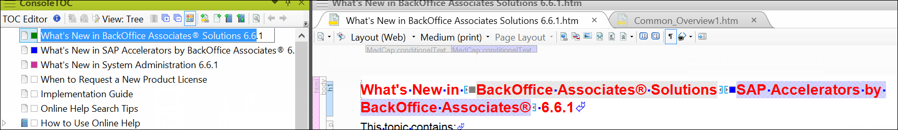
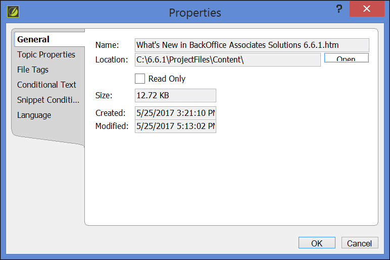

In SST, each page in the component has a Help icon (?). A field description topic for the page displays when the user clicks the icon.
The field description displays a link to the use case(s) that use the page.
For online documentation standards, use the following terms.
A page is a page in the Syniti product.
A topic is a topic in the online help.
The following documentation types are used in the SST online help:
Overview – Describes an overall process or general information about its subtopics.
Use case – Describes a set of tasks, each with its own steps, that allows a user and a system to perform a goal. Refer to Use Case Guidelines for more information.
Page description – Contains navigation steps to the associated SST page and a table that lists every visible field along with a description. Refer to Page Descriptions Guidelines.
Some tasks, such as configuration tasks, may be performed in a different component than the one being described. For example, the user performs configuration tasks in Common that apply to other components, such as Collect and Integrate. In this case, the Integrate help contains a link to the relevant section in the Common help.
Describe the System Administration tasks that apply across components in the System Administration help. For example, objects in components can be moved via the CTS process using Sys Admin pages. Security for all components is described in the Security section.
When Flare compiles file names, it embeds the entire file path string in the file name. If the file path string and file name combine into more than 99 characters, it will cause issues when recycling old checkout folders. Name file names and folders using as few characters as possible.
| are File Name | Description |
|---|---|
| [Project Name].flprj | Name of Flare project file, created by Flare when the project is created. |
| [ProductName].flmsp | Name of Flare master pages.Master page types include:Use CasesPage DescriptionsConfigurationTipsGlossary |
|
Stylesheets in Flare that contains all styles for the online help topics. |
| HTML5- Top NavigationSearch ResultsTripane FaviconContextMenu | Skins in Flare used to style the Help system output by Flare. |
| HTML5 Full.fltarHTML5 Solex.fltar | Targets in Flare used to build Help system outputs. |
| BSSCDefault.h | Header file in Flare that is included in the Help output to allow Context-sensitive help to work. |
Remove blank lines. Make sure that there are no extra blank lines at the end of topics. Leaving extra blank lines at the end of a topic affects the spacing in the printed documents.
Never add a blank paragraph to adjust spacing (or use the space bar to adjust indents.) Instead, make sure to apply the styles from the style sheet correctly.
Don’t use soft returns by pressing Shift+Enter.
Whenever a product page is referenced in a use case, add a hyperlink to the first reference only, but not if there is also a View the field description for the XXXxxx page link to the page in the use case.
For a page description topic, references must always have a hyperlink to the PD topic for a page. But don't link twice in the same paragraph or field description.
All hyperlinks must contain this code as an added security measure:
target="blank" rel="noopener noreferrer"
Every component has the following topics:
[Component] Overview – Provides a description of the component, such as its primary function, how it fits into the solution. This topic displays when a user clicks the component name button at the top of a topic, or when a user clicks the component name button on the home page. Stored in t he root of the component's folder in Content Explorer.
Setup and Configuration for [Component] – Provides the setup steps that are required before using the component. Topics for this section display at the bottom of the component overview page, and at the top of the right menu.
Set up Security for [Component Name] – Provides steps to set up security to be able to use the component. Added as a subsection of the Setup and Configuration section.
When creating a topic, remove special characters from the .htm page name that Flare creates. The title in the TOC and the topic title in the topic pane can use special characters. The .htm file name cannot. Special characters include:
# pound
< left angle bracket
$ dollar sign
+ plus sign
@ at sign
\% percent
> right angle bracket
! exclamation point
? question mark
\ back slash
& ampersand
* asterisk
’ single quotes
| pipe
/ forward slash
{ left bracket
} right bracket
” double quotes
= equal sign
: colon
™ trademark symbol
® Registered sign
© copyright symbol
Special characters are allowed in TOC topic title and the h1 for a topic as in the example below.

The special characters are allowed in TOC and topic names.

Special characters (in this case ®) are not included in filename.
Pop-ups allow users to reference a single source for content that is frequently referenced.
Pop-ups open in a separate window accessed when a user clicks a link in help.
Refer to the section Add Pop-ups for Frequently Referenced Content in the Syniti Documentation Process document for more information.
Snippets allow a user to set up static content that can be reused across the Flare project. A snippet represents content that does not change and this content appears in a topic (and not as a separate pop-up).
For example, the snippet for Add mode is:
If no records exist, the page displays in add mode. Otherwise, click Add.
Refer to the section Add and Insert Snippets in the Syniti Documentation Process document for information about how to add a snippet to a project and insert a snippet into a topic.
In use cases and page descriptions, a note can be used to
Point out an exception to a process
Explain ancillary information to the topic at hand. This information could be how the task performed in the use case affects pages, fields, or processes outside of that topic’s focus.
Provide a tip or warning
Evaluate the content of notes for inclusion in the general narrative. If it’s possible to add the information into the general flow of information, do not add a note.
Do not add any other words before the word NOTE, like IMPORTANT NOTE.